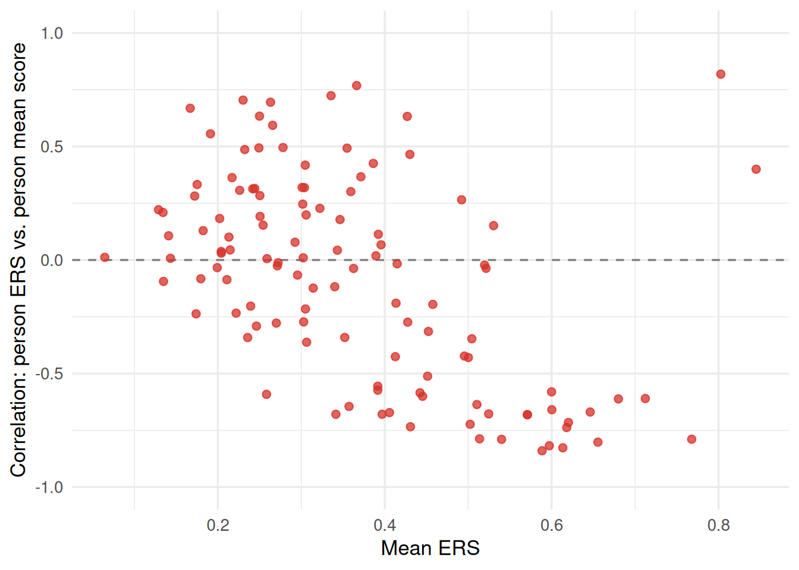
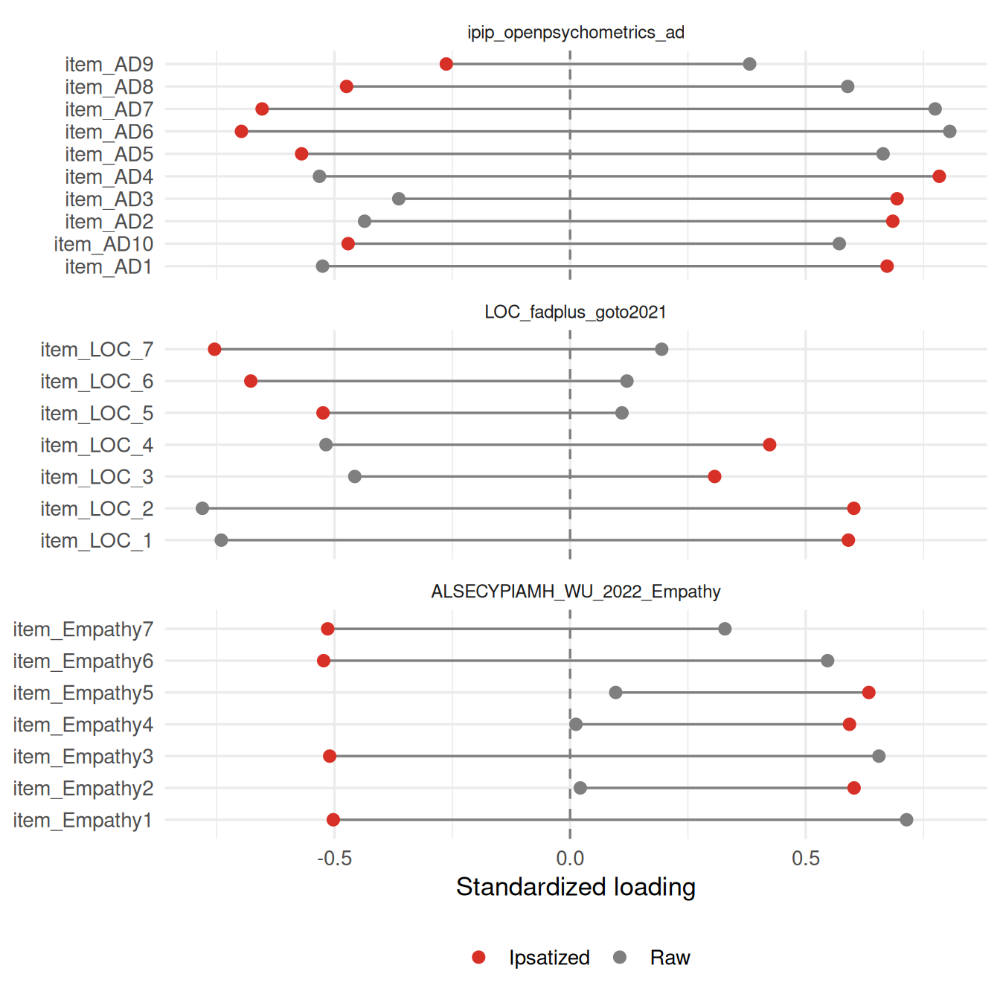

Code
viewof style_p = Inputs.range(
[0, 0.8], {value: 0.2, step: 0.05, label: "Extreme-response tendency (p)"}
)How prevalent are extreme (ERS) and midpoint (MRS) response styles in Likert-format IRW data, and do they distort substantive conclusions – like factor loadings – if left unmodeled? We screen IRW’s Likert-scale tables (4-7 response categories, at least 5 items), compute person-level ERS/MRS indices, and compare single-factor CFA loadings before and after a simple ipsatization-based style control.
July 21, 2026
This vignette — including the dataset search, the compute script, the analysis design, and the writing below — was produced largely by Claude (Anthropic), working from a task specification and with human review. Treat the methodological choices and interpretations accordingly, and check the compute script (response_style_compute.R) directly if you’re relying on the numbers here.
Likert-type items (Likert 1932) ask respondents to place themselves on an ordered scale — “strongly disagree” to “strongly agree,” typically with 4 to 7 response categories. The scale is meant to be a transparent window onto the underlying construct: someone who agrees more strongly with an item should pick a higher category. In practice, people also differ systematically in how they use the response scale itself, independent of the construct being measured. Three response styles are especially well documented:
These aren’t just a nuisance for individual items — they’re a known confound: if response style correlates with the substantive score a scale is trying to measure (rather than being pure, construct-irrelevant noise), then style and construct are statistically entangled, and any downstream model (a factor loading, a group comparison, a validity correlation) that treats the raw score as a clean measure of the construct is contaminated by however people use the scale.
This vignette asks three concrete questions of the Likert-format tables in the IRW:
Drag the slider to change how much a simulated respondent’s answers are driven by response style rather than by item content. At \(p = 0\), every answer reflects a fixed, moderate underlying attitude (with a little item-level noise); as \(p\) rises, a growing share of answers instead land on a scale endpoint by chance, regardless of what the item actually asks. The resulting ERS — the proportion of this one simulated respondent’s own answers sitting at an endpoint — is exactly the person-level statistic this vignette computes for every respondent in every IRW Likert-format table below.
n_items_demo = 12
rng = d3.randomLcg(42)
demo_responses = {
const resp = [];
for (let i = 0; i < n_items_demo; i++) {
if (rng() < style_p) {
resp.push(rng() < 0.5 ? 1 : 5);
} else {
const honest = Math.round(3 + (rng() - 0.5) * 1.5);
resp.push(Math.min(5, Math.max(1, honest)));
}
}
return resp;
}
demo_ers = demo_responses.filter((r) => r === 1 || r === 5).length / n_items_demoPlot.plot({
width: 700,
height: 110,
marginLeft: 40,
x: {domain: [0.5, n_items_demo + 0.5], label: "Item"},
y: {domain: [0.5, 5.5], label: "Response (1-5)", ticks: [1, 2, 3, 4, 5]},
marks: [
Plot.ruleY([1, 5], {stroke: "#d73027", strokeDasharray: "3,3"}),
Plot.dot(
demo_responses.map((r, i) => ({item: i + 1, resp: r})),
{
x: "item", y: "resp", r: 6,
fill: (d) => (d.resp === 1 || d.resp === 5) ? "#d73027" : "#2166ac"
}
)
]
})We restrict to tables tagged as Likert-format selected-response items, with 4 to 7 response categories (covering both odd category counts with a true midpoint — 5, 7 — and even counts without one — 4, 6), at least 5 items per person, and at least 100 respondents. The item-count floor matters more here than in most IRW vignettes: ERS and MRS are computed as a proportion of a person’s own responses, so with very few items per person that proportion is built from very few trials and is correspondingly noisy (a person who happens to answer 2 of 3 items at the scale endpoint gets an ERS of 0.67 by chance alone). Five items is still a fairly low floor — treat person-level style estimates from tables near it as noisier than those from longer batteries. The respondent floor rules out tables too small for table-level ERS/MRS means and CFA fits to be anything but sampling noise.
This selection is deliberately not exhaustive: 578 tables met these criteria as of July 2026, and this pass analyzes a random sample of 150 of them rather than the full list — some candidate tables run past 100 items and tens of thousands of respondents, and running all of them in one pass isn’t practical. fit_to_disk()’s on-disk cache (see below) means a later pass with a larger or different sample adds to what’s already here rather than redoing it.
For each candidate table, fit_response_style():
irw_fetch(table, resp = TRUE), falling back to a direct irw_long2resp() call if that internal conversion fails for a given table’s shape).NA for tables with an even number of categories, since there is no midpoint to speak of), and the person’s mean response level across items (used below both as a net-acquiescence proxy and as the substantive “raw score”).lavaan::cfa(), as in the CFA tutorial) two ways: once on the raw item responses, and once on ipsatized responses (each person’s own item responses minus their own mean across items — a simple, common style control). We compare standardized loadings between the two fits and summarize the mean absolute change as a table-level style-sensitivity metric. If a table’s CFA doesn’t converge cleanly on both the raw and ipsatized data, we record NA for style sensitivity rather than force a comparison on an unstable fit.analyze_response_style <- function(table_name, wide, tags_meta) {
# ... category-range consistency check, per-person ERS/MRS/mean level,
# ERS/MRS-score correlations, raw vs. ipsatized single-factor CFA ...
}
fit_response_style <- function(table_name) {
wide <- fetch_wide(table_name) # irw_fetch(resp = TRUE) with a long2resp fallback
analyze_response_style(table_name, wide, tags_meta)
}Of the 150 sampled tables, 116 produced usable response-style results after the checks above (the rest were dropped for an inconsistent category range, too few respondents after cleaning, or a CFA that didn’t converge).
To reproduce with current IRW holdings, re-run response_style_compute.R and commit the updated response_style_data/response_style_results.rds.
ers_plot_df <- summary_df %>%
filter(!is.na(mean_ers)) %>%
arrange(mean_ers) %>%
mutate(
rank = row_number(),
tooltip = paste0(
"Table: ", table,
"<br>Mean ERS: ", round(mean_ers, 2),
"<br>SD ERS: ", round(sd_ers, 2),
"<br>n_items: ", n_items,
"<br>N: ", n_participants
)
)
p <- ggplot(ers_plot_df, aes(x = mean_ers, y = rank, text = tooltip)) +
geom_errorbarh(aes(xmin = pmax(mean_ers - sd_ers, 0), xmax = pmin(mean_ers + sd_ers, 1)),
height = 0, colour = irw_grey) +
geom_point(colour = irw_blue, size = 2) +
labs(x = "Mean ERS (proportion of endpoint responses)", y = NULL) +
theme(axis.text.y = element_blank(), axis.ticks.y = element_blank())
ggplotly(p, tooltip = "text") |>
layout(margin = list(t = 60))If ERS were a small, uniform nuisance, this ranking would be flat and low. Instead — see the spread in Figure 1 — a handful of tables sit far to the right, with a substantial fraction of all responses landing on a scale endpoint, while others sit much lower. Table-level ERS is not a fixed property of “using a Likert scale” in general; it varies with the instrument, the sample, and (very plausibly, though we can’t isolate it here) the substantive content being asked about.
ggplot(summary_df %>% filter(!is.na(ers_score_cor)),
aes(x = mean_ers, y = ers_score_cor)) +
geom_hline(yintercept = 0, linetype = "dashed", colour = irw_grey) +
geom_point(colour = irw_red, alpha = 0.75, size = 2) +
labs(x = "Mean ERS", y = "Correlation: person ERS vs. person mean score") +
coord_cartesian(ylim = c(-1, 1))
A correlation near zero in Figure 2 is the reassuring case: ERS behaves like independent, construct-irrelevant noise for that table, and a substantive score built from the raw responses isn’t obviously contaminated by it. A correlation far from zero is the concerning case — it means people who respond more extremely also score systematically higher or lower on the scale itself, so ERS and the construct are statistically entangled rather than separable. Both patterns appear across IRW’s Likert tables; this variability is itself the point — you cannot assume from a scale’s category count or subject area alone whether style will be a nuisance or a confound in a given dataset.
| Table | N categories | Mean MRS | SD MRS | MRS-score r |
|---|---|---|---|---|
| colombia_2023_politics_trust | 5 | 0.413 | 0.359 | 0.435 |
| mpsycho_rogers_ocd | 5 | 0.356 | 0.264 | -0.739 |
| pass_vangsness_2019 | 5 | 0.336 | 0.237 | -0.203 |
| PPPSSAPIS_Figlova_2021_PSS10 | 5 | 0.324 | 0.209 | -0.087 |
| shu_2025_translation_mcpis | 5 | 0.317 | 0.288 | -0.437 |
| singh_2025_identity_grit | 5 | 0.284 | 0.210 | -0.075 |
| autism_blotner_2025_s1_views | 5 | 0.280 | 0.254 | 0.107 |
| PRCPSFFMQ_Lecuona_2017 | 5 | 0.278 | 0.128 | -0.110 |
| pinheiro_2023_trwcas | 5 | 0.270 | 0.134 | -0.048 |
| mindfulness_assessment | 5 | 0.270 | 0.138 | -0.238 |
| anunciacao_2025_emotional_responsibility | 5 | 0.266 | 0.197 | -0.232 |
| silvia_2024_funny | 5 | 0.262 | 0.229 | -0.167 |
| sabers_vesper2023 | 5 | 0.258 | 0.175 | -0.167 |
| lys_2020_rape_3_sj | 5 | 0.256 | 0.206 | 0.534 |
| ALSECYPIAMH_WU_2022_Empathy | 5 | 0.253 | 0.259 | -0.385 |
| meng-competitiveness-2023 | 5 | 0.247 | 0.162 | -0.349 |
| RvKDCS_Romiacg_Miroshnik_2020_BFI | 5 | 0.245 | 0.129 | -0.104 |
| ders_valencia_2025 | 5 | 0.245 | 0.204 | 0.523 |
| autism_blotner_2025_s2_ffmi | 5 | 0.243 | 0.161 | 0.097 |
| teq_novak_2021_bfin | 5 | 0.239 | 0.193 | 0.009 |
| singh_2025_identity_cse | 5 | 0.234 | 0.211 | -0.055 |
| goksel_2026_embarrassment_warmth_competence | 5 | 0.234 | 0.279 | -0.580 |
| sd3ypl_klimczak_2019_bpqa | 5 | 0.227 | 0.135 | -0.004 |
| iat_poverty | 5 | 0.224 | 0.170 | -0.004 |
| ipip_openpsychometrics_as | 5 | 0.222 | 0.180 | -0.217 |
| AMI_CV_Hewitt2024 | 5 | 0.220 | 0.129 | 0.190 |
| LOC_fadplus_goto2021 | 7 | 0.220 | 0.208 | -0.191 |
| PeSCBCSCe_Novak_2020_SPIRIT | 7 | 0.219 | 0.213 | -0.175 |
| teq_novak_2021_scbs | 7 | 0.215 | 0.212 | -0.187 |
| lys_2020_rape_3_cons | 5 | 0.214 | 0.165 | 0.244 |
| gahps_korner_2021 | 5 | 0.211 | 0.148 | 0.005 |
| perceived_injustice_mourin | 5 | 0.209 | 0.214 | -0.313 |
| scs_2025_cfaclinic | 5 | 0.208 | 0.149 | 0.159 |
| Zanesco_2023_Golleretal2020 | 5 | 0.207 | 0.152 | 0.237 |
| item_slope_west_2024_bscs | 5 | 0.205 | 0.179 | 0.105 |
| west_2021_aggnet_bfi2_agg_neu | 5 | 0.201 | 0.133 | -0.193 |
| florida_twins_pals | 5 | 0.200 | 0.112 | -0.136 |
| narcissism_schneider_2025_study1_koeberl_hsns | 5 | 0.198 | 0.170 | -0.033 |
| cfq_ruiz_2025_cfq | 7 | 0.198 | 0.243 | 0.311 |
| ffm_OPN | 5 | 0.196 | 0.189 | -0.386 |
| mpsycho_wenchuan | 5 | 0.195 | 0.171 | 0.210 |
| FomoNegativeAffect_cremer_2026_fomo | 5 | 0.193 | 0.170 | 0.343 |
| threat_isler_2024_exp3_cog_panas | 5 | 0.188 | 0.126 | 0.330 |
| pezzuti_2025_coolpeople_main_collectivism_Mexico_Chile | 7 | 0.184 | 0.215 | -0.211 |
| ipip_openpsychometrics_ad | 5 | 0.183 | 0.169 | 0.247 |
| sadism_west_2026_srp | 5 | 0.179 | 0.155 | 0.462 |
| SABFI2_Gallardo_Pujol_2018_LOT | 5 | 0.177 | 0.200 | -0.052 |
| afps_vangsness_2019 | 5 | 0.174 | 0.185 | -0.311 |
| genpsych_russell_2024_gemma | 5 | 0.173 | 0.127 | -0.201 |
| offlinefriend_ofaq | 5 | 0.169 | 0.120 | 0.041 |
| rfq8_wozniakprus_2022 | 7 | 0.168 | 0.150 | 0.052 |
| psychtools_geras | 5 | 0.164 | 0.075 | -0.238 |
| autism_blotner_2025_s1_bes | 5 | 0.164 | 0.196 | -0.072 |
| amatus_cipora_2024_amas | 5 | 0.160 | 0.153 | 0.448 |
| pezzuti_2025_coolpeople_main_collectivism_USA | 7 | 0.159 | 0.182 | -0.505 |
| lys_2020_rape_3_diff | 7 | 0.158 | 0.153 | -0.194 |
| hypersensitive_narcissism | 5 | 0.154 | 0.117 | -0.146 |
| lys_2020_rape_3_unjust | 7 | 0.151 | 0.133 | -0.293 |
| gender_roles | 5 | 0.150 | 0.084 | -0.031 |
| pps_vangsness_2019 | 5 | 0.148 | 0.185 | 0.010 |
| anxiety_lordif | 5 | 0.144 | 0.168 | 0.771 |
| pezzuti_2025_coolpeople_single-items | 7 | 0.141 | 0.142 | -0.088 |
| anunciacao_2025_personality_autonomy | 7 | 0.140 | 0.153 | -0.044 |
| dvivdtws_ppmial_marcatto_2023_cwb | 5 | 0.136 | 0.098 | 0.411 |
| dvivdtws_ppmial_marcatto_2023_ocs | 5 | 0.136 | 0.098 | 0.411 |
| agn_kay_2025 | 7 | 0.135 | 0.170 | 0.030 |
| NSR-FC_Youhasan_2021 | 5 | 0.135 | 0.119 | -0.558 |
| autism_blotner_2025_s2_acme | 5 | 0.130 | 0.153 | 0.425 |
| threat_isler_2024_exp1_incentive_panas | 5 | 0.130 | 0.124 | 0.465 |
| FIVPEI_Perrig_2023_AttDiff | 7 | 0.129 | 0.125 | -0.586 |
| ups_vangsness_2019 | 5 | 0.129 | 0.159 | -0.002 |
| anunciacao_2025_personality_intraception | 7 | 0.122 | 0.169 | -0.299 |
| nas_rogoza_2024_study2_ngs | 7 | 0.122 | 0.157 | 0.551 |
| LSHS-E_Quidaja_2022 | 5 | 0.118 | 0.105 | 0.454 |
| psychotools_gratitude_gq6 | 7 | 0.117 | 0.189 | -0.578 |
| wang_onlineriskexp_2025 | 5 | 0.113 | 0.204 | 0.670 |
| mbft_anunciacao_2024 | 7 | 0.111 | 0.082 | -0.082 |
| HEARD_Roch_2022_WHODAS | 5 | 0.109 | 0.138 | 0.738 |
| MotAcademica_Ribeiro_2019 | 7 | 0.107 | 0.096 | 0.239 |
| anunciacao_2025_personality_change | 7 | 0.104 | 0.147 | -0.272 |
| suicide_reinbergs_2025_soss | 5 | 0.102 | 0.206 | 0.525 |
| pds_kay_2025 | 7 | 0.101 | 0.148 | 0.326 |
| dwyer_2025_genomics_gec | 7 | 0.096 | 0.145 | -0.404 |
| K-PCQ_Huh_2022 | 7 | 0.095 | 0.152 | 0.622 |
| christiannationalism_davis2021 | 5 | 0.086 | 0.165 | 0.037 |
| sadism_west_2026_cast | 7 | 0.084 | 0.132 | 0.460 |
| cf_kay_2025 | 7 | 0.079 | 0.153 | 0.344 |
| singh_2025_identity_pba | 5 | 0.070 | 0.160 | 0.587 |
| FIVPEI_Perrig_2023_IMI | 7 | 0.065 | 0.122 | -0.515 |
| ecps_sahm_2024_moral | 7 | 0.062 | 0.086 | -0.199 |
| amatus_cipora_2024_fsmas_se | 5 | 0.059 | 0.128 | -0.633 |
| anunciacao_2025_personality_affiliation | 7 | 0.058 | 0.103 | -0.441 |
| pcl5_xiong_2025 | 5 | 0.056 | 0.101 | 0.724 |
| FPAS_Silva_2022 | 5 | 0.017 | 0.037 | -0.095 |
sens_df <- summary_df %>%
filter(!is.na(style_sensitivity)) %>%
arrange(style_sensitivity) %>%
mutate(
rank = row_number(),
tooltip = paste0(
"Table: ", table,
"<br>Style sensitivity: ", round(style_sensitivity, 3),
"<br>n_items: ", n_items,
"<br>N: ", n_participants
)
)
p <- ggplot(sens_df, aes(x = style_sensitivity, y = rank, text = tooltip)) +
geom_col(fill = irw_blue, width = 0.6, orientation = "y") +
labs(x = "Style sensitivity (mean |Δ standardized loading|)", y = NULL) +
theme(axis.text.y = element_blank(), axis.ticks.y = element_blank())
ggplotly(p, tooltip = "text") |>
layout(margin = list(t = 60))We highlight the tables with the largest style-sensitivity metric — the biggest average shift in standardized loadings between the raw and ipsatized single-factor CFA — to make concrete what “controlling for style changes the answer” actually looks like at the item level.
# Capped at <=15 items so three stacked facets (one panel height each) stay
# readable; a table with many more items than the others would otherwise be
# squeezed into the same vertical space and its item labels would overlap.
top_tables <- summary_df %>%
filter(!is.na(style_sensitivity), n_items <= 15) %>%
slice_max(style_sensitivity, n = 3) %>%
pull(table)
example_loadings <- loadings_df %>%
filter(table %in% top_tables) %>%
mutate(table = factor(table, levels = top_tables)) %>%
pivot_longer(cols = c(loading_raw, loading_ipsatized),
names_to = "model", values_to = "loading") %>%
mutate(model = recode(model, loading_raw = "Raw", loading_ipsatized = "Ipsatized"))
ggplot(example_loadings, aes(x = loading, y = item, colour = model)) +
geom_vline(xintercept = 0, linetype = "dashed", colour = irw_grey) +
geom_line(aes(group = item), colour = irw_grey) +
geom_point(size = 2.4) +
facet_wrap(~table, scales = "free_y", ncol = 1) +
scale_colour_manual(values = c(Raw = irw_grey, Ipsatized = irw_red), name = NULL) +
labs(x = "Standardized loading", y = NULL) +
theme(legend.position = "bottom", strip.text = element_text(size = 9))
Figure 4 is where “style-sensitivity” stops being an abstract number and becomes a concrete analysis decision. Read each panel item by item: the grey dot is an item’s loading from the raw responses, the red dot is the same item’s loading after ipsatization, and the line between them is the size of the shift. In all three tables here the shift isn’t confined to a couple of unstable items — nearly every item flips from a positive raw loading to a negative ipsatized one, or vice versa (item_AD4 goes from -0.53 to +0.78; item_LOC_1 from -0.74 to +0.59; item_Empathy1 from +0.71 to -0.50, and almost every other item in each of these three tables does the same). That is the practical stakes of this vignette’s third question: if you used the raw-score loadings to decide which items are the strongest measures of the construct — or even just to check that a scale’s items all point the same direction — a style control would hand you the opposite answer for the same data, not because the construct changed, but because what looked like signal was substantially response style. Which set of loadings is “correct” isn’t something this comparison settles (see the ipsatization caveat below); the point is that the choice is consequential, not cosmetic.
Ipsatization is a crude style control, not a validated one. Person-mean-centering removes all between-person variance in mean response level — including genuine, construct-relevant differences in overall standing, not just style-driven ones. For a single-factor scale, that can push item covariances negative in a way raw scores never show, which is why Figure 4 can show loadings that don’t just shrink but flip sign entirely between the raw and ipsatized fits. That isn’t a bug in the comparison; it’s the classic, well-documented behavior of ipsative data (forcing a fixed row sum/mean induces artificial negative dependence among the remaining items). Treat the direction and size of the shift as evidence that style materially affects the loading structure for that table, not as evidence that the ipsatized loadings are the “corrected,” trustworthy ones.
A more principled alternative: IRTree models. Tree-based IRT models (e.g. Böckenholt-style IRTree models) explicitly separate a response-style process (does this person tend to pick an extreme/midpoint category at all?) from a content process (given that, do they agree or disagree?), estimated jointly rather than removed by a blunt transformation of the raw scores. That’s a heavier modeling commitment than this vignette makes — it requires specifying a tree structure per item type and fitting a multidimensional IRT model — and is flagged here as a natural extension rather than something implemented in this pass.
Other scope limitations. The category-range consistency check drops any table where items don’t share a single response format, which likely removes some legitimately mixed-format instruments along with genuinely miscoded ones — we can’t distinguish the two from the data alone. The ERS/MRS-score correlation uses the person’s own mean item response as the “score,” which is appropriate for a single-factor instrument but conflates score and style more directly than an external criterion would; a validity correlate independent of the item set itself would be a stronger test of confounding, and is left for future work. Style-sensitivity is computed only where both CFA fits converge cleanly — tables where a single-factor model is a poor fit to begin with are silently excluded from that specific comparison (though they still contribute to the ERS/MRS distributions above).
Results were computed on July 19, 2026. To regenerate: